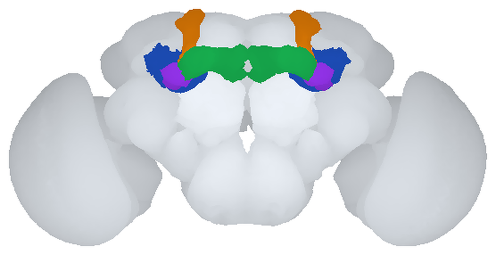
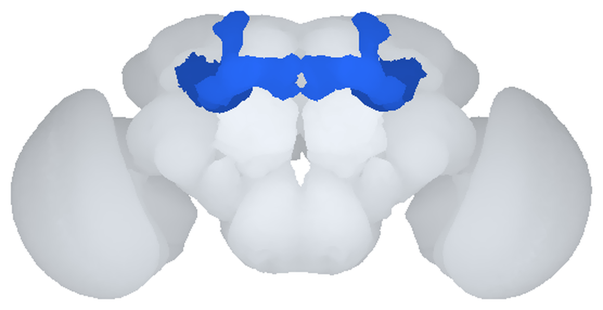
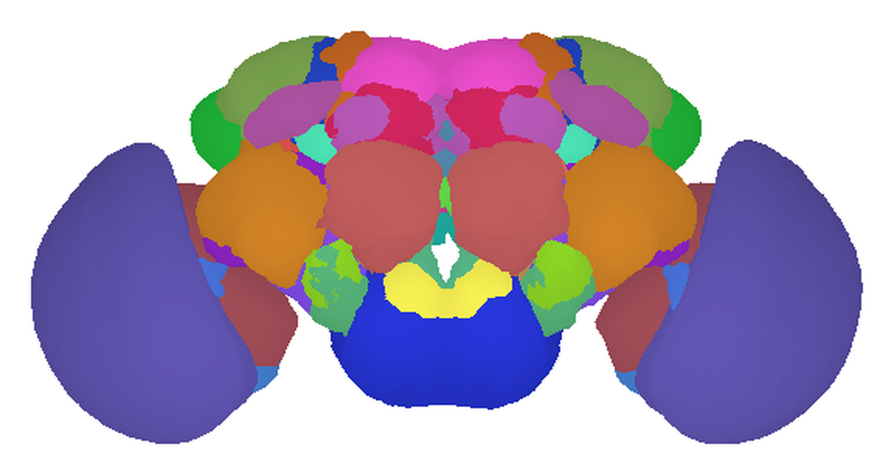

PART 1
一個腦區的定義，如何從「看起來像一塊」變成「有沒有自己的在地神經元」


A、B 兩圖由 scripts/make_figures.py 從標準腦分區檔算出，用同一個裁切框，比例一致。模板 FCWB（Ostrovsky & Jefferis 2014，CC0）；分區 FCWBNP（natverse，GPL-3；分區出自 Ito et al. 2014, Neuron 81:755–765）。
A 和 B 是同一顆腦、同一個結構。差別只在於你拿什麼問題去問它。
A 是解剖學家的答案。他們把腦切片、染色，看得見的界線畫下來，於是蕈狀體有了四個部分：萼、柄、垂直葉、水平葉。這是可靠的觀察，四個部分確實長得不一樣。
B 是 Chiang 等人在 2011 年提出的答案。他們問的不是「這裡看起來像幾塊」，而是「這裡有沒有一群只在這裡工作的神經元？」——結果是：萼沒有自己的，葉也沒有自己的。整顆蕈狀體才有。所以按這個判準，它是一個單位，不是四個。
正視圖裡萼（藍）和柄（紫）被前面的葉擋掉大半。換個角度看，四個部分的關係會清楚很多：
看清楚這個形狀之後，下一節的問題才有意義：如果你把這幾個部分當成幾個獨立的腦區來做分析，會發生什麼事？
假設你手上有一批神經元的影像，你想問一個很自然的問題：哪些腦區之間有連結？
做法很直觀——一顆神經元如果同時伸進 A 區和 B 區，就記 A 和 B 之間一筆連結。把所有神經元都這樣數過一遍，就得到一張全腦的連線表。
問題來了。這張表長什麼樣子，完全取決於你事先怎麼劃 A 區和 B 區，而劃分方式是你在數之前就決定的。
如果你把這些部分當成各自獨立的腦區，那麼每一顆 Kenyon cell 都會替「萼—柄」「柄—葉」記上一筆連結。光是一側就有兩千五百顆，這幾條線會粗得嚇人，看起來像是全腦最強的連結之一。
但這裡要小心一個反問：這跟一顆嗅覺投射神經元同時伸進觸角葉和側角、於是記下「AL—LH」一筆，有什麼不同？為什麼這就被歸類為一個合理的連結？
從資料上看，沒有不同。兩者都是「同一顆神經元出現在兩個區域裡」——這正是判準本身，不是判準的例外。
差別不在神經元，在你事先劃的那條線落在哪裡：
兩種情況在資料裡長得一模一樣，而「同一顆神經元伸進兩區」這個判準本身分不出它們。要分得出來，你需要一個獨立的方法來分區，然後再把神經元納入來討論連結。
反過來，如果一區畫得太大也一樣有問題：把兩個其實各做各的區域合成一塊，它們之間真正的往來就被藏進「區內」，從連線表上消失了。
這也不是假想的風險。論文把全腦掃過一遍之後發現，腹外側前腦（VLP）就該拆成背側與腹側兩塊——兩塊各有自己的在地神經元，而且各自連向不同的對象。如果把它當成一整塊，這兩組不同的對外關係就會被併成一筆，看起來像是同一個區域同時連向所有對象。
切太細，你會憑空多出粗大的假連結；併太大，真正的差別會被抹平。兩種錯法的方向相反，後果卻一樣：連線表上的東西，有一部分是你自己的切法造成的，不是腦的性質。
所以「腦區怎麼劃」不是命名習慣的問題，也不是可以之後再說的細節，它是分析的第一步。
你需要的是一個不靠肉眼、講得出理由、別人可以重跑一次的分區方法，而且它必須在算連線之前就先做完。LPU 就是這樣一個方法。
LPU 的判準只有兩條。下一節先把會用到的名詞交代掉，第 4 節再看那兩條是什麼。
接下來會反覆出現四個專有名詞，先花兩分鐘認一下。
腦裡神經纖維密集交織、幾乎沒有細胞本體的區域。染色之後肉眼看得出界線，傳統的「腦區」指的就是它。這是形態上的分區。
纖維完全不離開某一個區域的神經元。它不負責把訊息送出去，只在區內把訊息整編一遍。LPU 的判準完全建立在它身上。
纖維跨出所在區域、伸向別區的神經元。區與區之間的訊息往來靠它。LN 管區內，PN 管區間。
一群走同一條路徑的神經纖維綁在一起形成的束。可以想成腦裡的幹道。論文規定一條神經束至少由三顆神經元組成。
Chiang 等人在 2011 年用的腦區名字，和今天大多數工具、資料庫用的名字不是同一套。2014 年由 17 位作者、外加集體署名的「昆蟲腦命名工作小組」發表了一套系統性命名法（Ito et al., Neuron 81:755–765），把整個昆蟲腦的名字重新整理過。本頁的圖用的是新名字，論文的文字用的是舊名字。
把 Chiang 論文補充材料列出的 29 個舊名字，逐一拿去對今天的那一套。下表列出全部 29 個，不是舉例：
| 類別 | 數量 | 全部名單 |
|---|---|---|
| 名字沒變 | 5 | AL（觸角葉）、AMMC、EB（橢球體）、FB（扇形體）、LH（側角） |
| 同一個結構，換了縮寫 | 8 | Cal → MB_CA｜Lat Tri → BU（bulb，Ito 論文明訂的新詞）｜Lob → LO｜LoP → LOP｜Med → ME｜Nod → NO｜PCB → PB｜SOG → GNG／SEZ（Ito 論文明訂） |
| 一個舊名對到多個新標籤 | 1 | MB（蕈狀體）→ MB_PED ＋ MB_VL ＋ MB_ML（萼另外對到 MB_CA，已列在上一類） |
| 對應關係未查證 | 1 | OPTU（視結節）——新系統裡有 AOTU（前視結節），但 Ito 論文正文沒有列出這一條對照，本頁不下定論 |
| 找不到對應 | 14 | CCP、CMP、CVLP、DLP、DMP、FSPP、IDFP、IDLP、OG、PAN、SDFP、SPP、VLP、VMP |
| 合計 | 5 ＋ 8 ＋ 1 ＋ 1 ＋ 14 ＝ 29 | |
一個腦區如果
（一）擁有自己的一群在地神經元（LN），這群 LN 的纖維完全侷限在該區域之內；而且
（二）該區域至少被一條神經束連上，
它就是一個 LPU。
條件一的來源是觸角葉。觸角葉的在地神經元（AL-LN）是當時研究得最清楚的一群，它們的纖維彼此纏繞、完全待在觸角葉裡。論文明說，正是 AL-LN 的研究促使他們去檢查腦中其他同樣有一群 LN 纏在一起的區域——即使那些區域的功能當時還不清楚。條件一就是把觸角葉的這個特徵拿來當成一般判準。
條件二論文沒有另外說明理由，只寫「每個 LPU 至少被一條神經束連上」，並把它放在判定流程的最後一步當作驗證。
還有一件事值得注意：這是一個操作型定義，它規定的是「怎麼判定」，不是證明了「這一區在生理上真的是一個運算單元」。論文自己用的字是 putative（推定的）——圖 5 的圖說 (B)(C) 寫的是「推定的 LPU」與「缺乏 LN 的推定 hub」。
定義本身不難記，難的是它會給出跟直覺不一樣的答案。這四個案例最能說明它到底在做什麼：
| 有自己的 LN 族群 | 有神經束連上 | 邊界怎麼來的 | |
|---|---|---|---|
| neuropil 神經髓質區 | 不一定 | 不一定 | 染色後的形態界線，肉眼判定 |
| LPU 在地處理單元 | 有 | 有 | 由在地神經元的分布算出來 |
| hub 轉接區 | 沒有 | 有 | 沿用 neuropil 的邊界 |
但判定不是「一個 neuropil 進去、一個答案出來」。論文在導入 LPU 時立了一個前提：LPU 的範圍等於或小於一個解剖學 neuropil 的邊界，流程也只做「在 neuropil 內部找有沒有需要再細分」。實際跑下來卻出現四種情況：
補充材料〈Defining an LPU〉一節的第一句：
“Assuming an LPU is equal to or smaller than the boundary of an anatomically demarcated neuropil region, we detect whether a neuropil contains more than one population of LNs…”
正文導入 LPU 的那句用的是同樣的說法，只是主語寫成「一個資訊處理單元」而不是 LPU：“Assuming an information processing unit is equal or smaller than the boundary of an anatomically demarcated neuropil region such as the AL…”
| 情況 | 例子 |
|---|---|
| 一個 neuropil ＝ 一個 LPU | 多數情況 |
| 一個 neuropil 拆成兩個 LPU | VLP（全篇唯一） |
| 多個 neuropil 併成一個 LPU | 蕈狀體：論文把它分成萼與葉兩個 neuropil，兩者都沒有自己的 LN 族群，於是整顆算一個 LPU。中央複合體也有一例（見上一節第三個案例） |
| 沒有自己的 LN 族群，但有神經束 | 歸為 hub |
合併這件事在圖 5A 那張正負號表上看得很清楚。表中同時出現這幾列：
| 圖 5A 裡的列 | 有無 LN 族群 | 意思 |
|---|---|---|
| Cal | − | 萼單獨看，沒有自己的 LN 族群 |
| MB | − | 葉單獨看，也沒有 |
| Cal＋MB | ＋ | 兩者合起來才有——這一列就是合併本身 |
| Lat Tri | − | 側三角單獨看，沒有 |
| EB | − | 橢球體單獨看，也沒有 |
| Lat Tri＋EB | ＋ | 合起來才有 |
把兩個條件套過全腦之後，論文得到 41 個 LPU。這個數字是這樣湊出來的：
另外約 26% 的已建圖神經元屬於 LPU 的在地神經元。剩下的區域則歸為 hub。論文說，LPU 加 hub 合起來填滿了大部分的腦（圖 5D）。
論文建連線矩陣時用的是 58 個 neuropil，判定出來的是 41 個 LPU，hub 的數量則有三個互相矛盾的說法（見下）。論文沒有提供一份把 58 個 neuropil 逐一歸到 LPU 或 hub 的對照，也沒有說明差額。加上前一節那兩個「多個 neuropil 併成一個 LPU」的例子，這兩套數字本來就不是一對一的關係。
但那張圖只存在於論文裡，版權屬於出版社，不能放在這個公開網頁上。更根本的問題是：我們手上沒有可以直接使用的 LPU 分區檔。論文摘要說 FlyCircuit 提供全腦 LPU 的三維視覺化，但那是網站上的呈現；本機的 FlyCircuit 資料裡沒有 LPU 的分區檔，也沒有找到可下載的版本。要有一張自己的 LPU 圖，就得把論文的劃分流程重跑一次——那正是 PART 3 要做的事。
所以這裡先放一張替身圖。它不是 LPU，是今天通行的解剖學分區：

scripts/make_figures.py 從標準腦分區檔算出。資料來源同前圖。上面那張圖的分區有 41 個基本名字（34 個成對 ＋ 7 個中線 ＝ 75 個標籤），出自 Ito et al. 2014。
Chiang 等人數出來的是 41 個 LPU（19 對 ×2 ＋ 3 個中央不成對），出自 2011 年、用的是舊命名。
兩個數字一樣純屬碰巧，兩套分區的邊界、名字、劃分依據沒有一項相同。看到「41」不要以為講的是同一件事。
坑一：41 還是 43，沒有人裁決過。後續由部分同一批作者發表的資訊流分析論文，引用時寫的是 43 個 LPU，Chiang 2011 自己寫 41。兩篇作者群高度重疊，卻沒有交代這個改動是怎麼來的。引用時要標清楚你用的是哪一篇的數字。
坑二：hub 有幾個，論文自己給了三個答案。摘要寫「六個 hub」；正文寫「只有四對 neuropil 缺乏分離的 LN 族群：OPTU、Nod、OG、IDLP」；而圖 5A 那張正負號表上，標記為「−」的共有九個——Cal、EB、FSPP、IDLP、Lat Tri、MB、Nod、OG、OPTU（本頁直接判讀原圖數過）。三處三個數。比較安全的寫法是「41 個 LPU，加上數個缺乏在地神經元的 hub」，避開這個數字。
坑三：橢球體（EB）在正文與圖 5A 裡的身分不一樣。正文把 EB 列為三個中央不成對 LPU 之一（另兩個是 PCB、FB），但圖 5A 給 EB 的標記是「−」，也就是「沒有自己的 LN 族群」；表上得到「＋」的是合併後的 Lat Tri＋EB。換句話說，同一篇論文的正文與圖，對 EB 到底算不算一個獨立的 LPU 給了不同的答案。論文沒有說明這個差異。
回到第 2 節那個問題：腦區怎麼劃，決定了連線表長什麼樣。
有了 41 個 LPU，就有了 41 個講得出理由的節點。把 LPU 當節點、神經元的投射當連線，全腦的連線表就成立了——而且這張表不再是「某個解剖學家這樣切」的產物，它背後有一條可以重跑的判準。
論文在建這張表的時候還做了一件事：把所有屬於 LPU 的在地神經元排除掉。另外要注意，這張矩陣是以 58 個 neuropil 為單位建的，不是以 41 個 LPU。論文沒有說明排除在地神經元的理由。
在這張表上做分群，跑出四個功能模組——聽覺、視覺、運動、嗅覺。每個模組的特徵是：組內連線多、彼此位置相鄰、跨模組的連線稀疏。論文另外辨識出 58 條神經束，依連法分成三類：連接左右腦同名區域的、斜向連接左右腦不同區域的、以及連接同側兩個區域的。
這才是「LPU 重要」的具體意思：在它之後，這條研究線上的每一篇論文——資訊流分析、社群結構分析、自動分割工具——都以這 41 個節點、這顆標準腦為共同的座標框。
這一節不是挑毛病，是使用這套分區時該知道的邊界。
一、看得到纖維，看不到突觸。這是光學顯微鏡解析度的圖譜。它說的是「哪一區的神經元把纖維伸進了哪一區」，不是「哪一顆神經元接到哪一顆神經元」。兩顆神經元的纖維在同一個區域裡出現，不代表它們之間有突觸。論文自己講得很清楚：在缺少突觸細節的情況下，要理解一個 LPU 內部如何處理資訊，還太早。
二、劃分規則本身不完全一致。論文導入 LPU 時的前提寫的是「等於或小於」一個 neuropil 的邊界（補充材料〈Defining an LPU〉第一句），流程也只做「在 neuropil 內部再細分」；但蕈狀體與中央複合體那兩例，實際上是把好幾個 neuropil 合起來當一個 LPU。論文沒有討論這個落差，也沒有修改那句前提。要重跑這套流程的人會先卡在這裡——因為合併這一步不在那七個步驟裡。
三、41 不是一個穩定的數字。VLP 已經被拆成兩個，論文明白承認其他 LPU 也可能有同樣情況，只是目前的解析度與取樣量還看不出來。這是一個當下的暫定值。
四、判準依賴取樣（※ 這一條是推論，論文未直接討論）。一個區域要被判定成 LPU，前提是它的在地神經元有被標記到、被取像、被放進資料庫。FlyCircuit 當時收錄的約一萬六千顆神經元，只佔全腦約十分之一。
五、邊界是統計出來的，不是量出來的。所有神經元都得先對齊到同一顆標準腦才能疊加，而對齊本身有誤差。論文自己量過：只做全腦整體對位時，同一個結構在不同樣本之間平均差 3.9 微米；針對局部再對一次可以降到 1.1 微米，但代價是選定區域之外反而歪掉。這個誤差是所有後續分析在空間精度上的天花板。
六、「有多少在地居民才算數」沒有下限。論文提出過這個問題——是不是要有最少幾顆 LN，才構成一個有意義的處理單元？它把問題寫出來了，但沒有回答。
scripts/make_figures.py